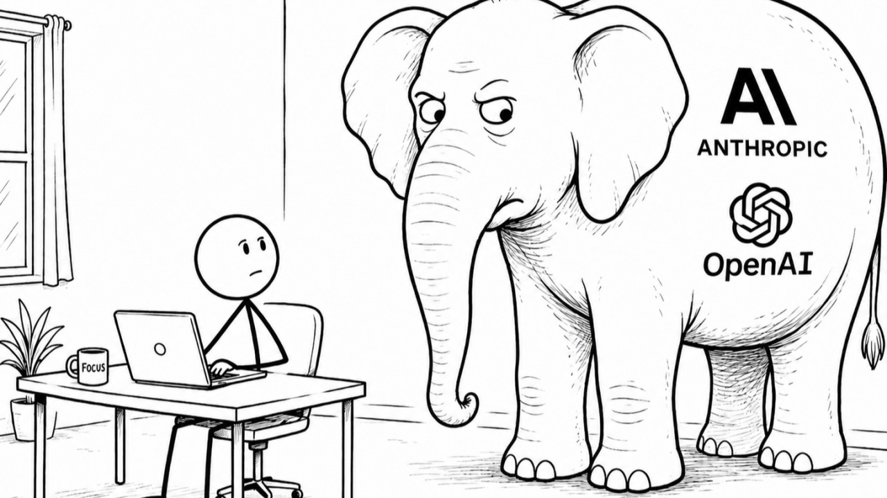

Build devtools for your app
I Love Building Tools


The Original Plan vs. The AI Reality

Why Create Tools? (Tools vs. Skills)
Approach A: Writing an AI Skill
- Dead easy to write in markdown.
- Non-deterministic
- Context Bloat
- Pricy long term
Approach B: Custom Lint Rule Plugin
- Sounds scary to do
- Deterministic
- Zero runtime token cost
When to (and NOT to) Build a Tool
Don't spend 10 days and millions of tokens creating a tool that runs once and saves 30 minutes. Calculate time gained:
- Team Compounding: Small weekly time savings per dev compound into major annual team gains.
- AI Shifts the Equation: Building a tool with AI in 4 hours instead of 40 hours makes ROI break-even almost immediate.
Interactive ROI Calculator
Which Tool Should You Create?
There are many different kinds of developer tools available in Dart/Flutter:
Custom Lints
Enforce code conventions & prevent bugs via analyzer plugins.
Code Generators
Ensure consistency & deterministic updates across data models.
CLIs & Scripts
Universal scripting interface for Humans, CI, and AI agents.
MCP Servers
Stateful Machine Context Protocol servers for AI agents.
DevTools Extensions
Visual GUIs & inspectors for human developers and QA.
Codemods & Docs
Automated API refactoring, architecture graphs, & docs.
Custom Lints (analysis_server_plugin)
Pros
- Cheap to build
-
Naturally visible to Humans, AIs, and CI via
dart analyze. - Empowers AI by design
Cons
- RAM cost
-
Slows down
dart analyzeslightly to spawn plugins. - Not everything in styleguides can be implemented as a lint.
❌ DON'T
// test/lint_test.dart
test(() async {
final result = analyze('''
class GoodCase {}
class BadCase {}
''');
});✅ DO
// test/lint.dart
class GoodCase {}
// ignore: my_lint/code
class BadCase {}
And enable the lint on your project, alongside
unnecessary_ignore
Quick Fixes & Automated Refactors
Pros
- Cheap to build.
- Good at scale for batch fixes
Cons
- A lot less useful: Requires making a mistake first.
- Writing automated fixes is often a lot more complex.
- AIs are currently a bit bad at using quick-fixes
Code Generators: Rethinking the Main Value
Common Argument: "Codegen reduces boilerplate." → I couldn't care less, especially with AI!
What Codegen is ACTUALLY About
- Reduce code to Review
- Ensures Consistency
- Update generated code is simple
Translation.of().translate('settings_title')
is unused.It's easy to know if
Translation.of().settingsTitle
is unused.Delete the translation and you'll get a compilation error, ha!
What to Automate with Codegen (and What to Avoid)
Definitely Automate
- Backend Data Layer: GraphQL / Swagger / gRPC schemas to Dart models.
- On-Device DB: Table schemas.
-
Assets:
FontAwesome.checkinstead of'fa check'. -
Translations:
L10n.of(context).homePageTitle.
Maybe Automate
- Routing: Type safety on route parameters & static route list.
-
Design system browser: Auto-generated widget
browser via
build_runner. -
Error-Prone Tasks: Auto-generated
toStringto prevent stale fields.
Do NOT Automate
-
Minor Boilerplate Gains that aren't error prone
(e.g. my old
functional_widgetsaving 2-3 lines on StatelessWidgets).
Configure your CI pipeline to auto-run codegen and commit updates when schemas change!
It doesn't have to be complex
build_runner logic!
❌ DON'T
// test/generator_test.dart
test('test generator string output', () {
final output = generate('class Foo {}');
expect(
output,
contains('void foo() {}'),
);
});✅ DO
// test/integration/foo_test.dart
// Write target code, run generator & test runtime:
@data
class Foo {}
test('test runtime behavior', () {
expect(Foo().toString(), 'Foo()');
});Command Line Interfaces (CLIs)
CLI as Universal Interface Layer
-
./install: Check Flutter/Dart versions, missing tools (Docker, CLIs), set up hidden.env& codegen. Link solutions for missing tools! ./run: Start emulators, Docker, local servers.-
./test: Unit & integration tests on browser/simulators. -
./deploy: Update changelogs, bump versions, release flags, publish to stores.
Process.run('dart', ['path/to/bin.dart', '--machine']);MCP Servers (Machine Context Protocol)
MCP Architecture: Connecting AI Agents to App State
DevTools Extensions: For Humans Only
📱 In-App DevTools
- On-Device Inspection: Embedded directly inside the app build for QA and devs.
- No Debugger Required: Test feature flags, inspect logs, & trigger state overrides on real hardware.
- Ideal For: Manual QA testing, quick runtime tweaks, & staging builds.
🖥️ External DevTools Extensions
- Flutter DevTools Suite Integration: Embedded extension tab inside standard DevTools.
-
Debugger API & Analyzer: Powered by
vm_service& static AST analysis. - Ideal For: Rich state tree inspectors, visual debuggers, & time-travel state tracking.
Extract state inspection logic into a shared Dart package so both humans and AI agents benefit!
How to Make Tools: Static vs. Runtime Analysis
Static Analysis (package:analyzer)
Don't rely on greps/regex and string code parsing! Analyzer is a must for precise code views.
- List all classes across workspace.
- Find everywhere a class is used.
- Inspect methods, doc comments, annotations, and AST fields.
Runtime Analysis (package:vm_service)
Inspect live application memory via VM Service URI (from logs or VS Code clipboard).
-
Arbitrary code execution (
eval(code)like VS Code Debugger Expression Evaluator). - Inspect full application memory.
- List all object instances and read field values live.
Practical Architecture: The Riverpod Tooling Suite
riverpod_lint & riverpod_generator
-
Shared Implementation: All provider metadata
parsing logic is extracted into
riverpod_analyzer_utilslibrary and used by both tools. - Technically allows anyone to build custom Riverpod lint rules or documentation tools.
Riverpod DevTool & MCP Refactor
-
Uses
vm_serviceto inspect running app & display all providers and their states. - Supports time travel state history & live provider modification.
- Current Refactor: Extracting logic so a Riverpod MCP Server can be created for AI agents!
So, When DO We Use Skills Then?
Skills ARE for Discoverability
- Installing a tool doesn't mean the AI knows it exists.
- A simple prompt: "You can inspect memory of the debugged app using MyState MCP" is enough for AIs to use it.
DON'T Write Tool Manuals in Skills
- Tools have natural discovery mechanisms!
-
CLIs have
--help(agents check this natively). - MCP servers list tools with descriptions.
- Generators have READMEs and Dart doc comments.
Conclusion
- Don't replace tools with prompts. Use prompts to create your tools.
- Avoid using Skills to solve problems. Use them to make an agent discover the tools to solve said problem.
- Building tools has never been easier thanks to AI.
- Write all tools in Dart: Custom lints, codegen, CLIs, and MCP servers can all be written in Dart!